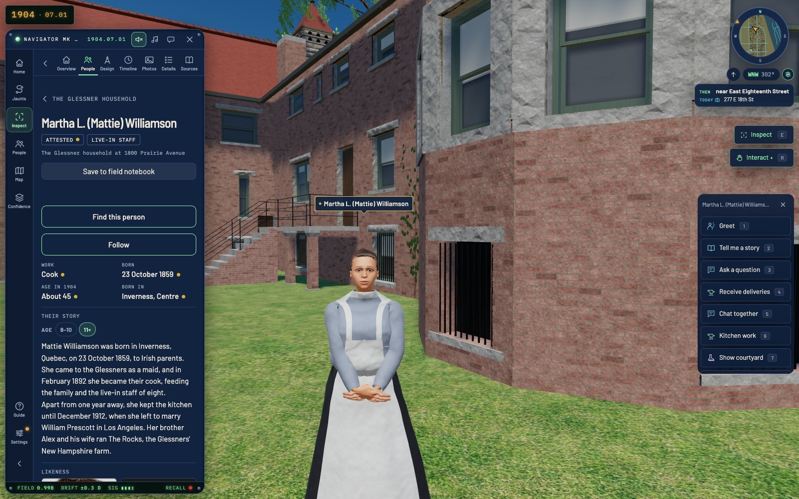
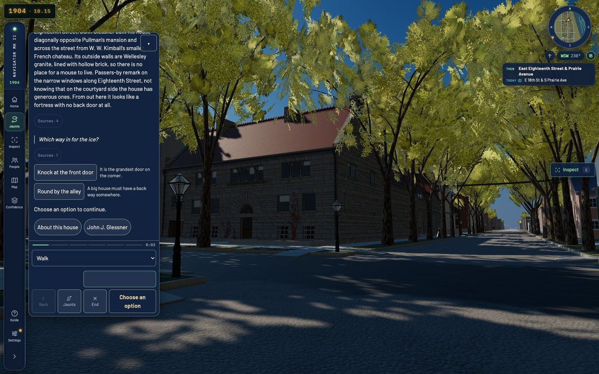
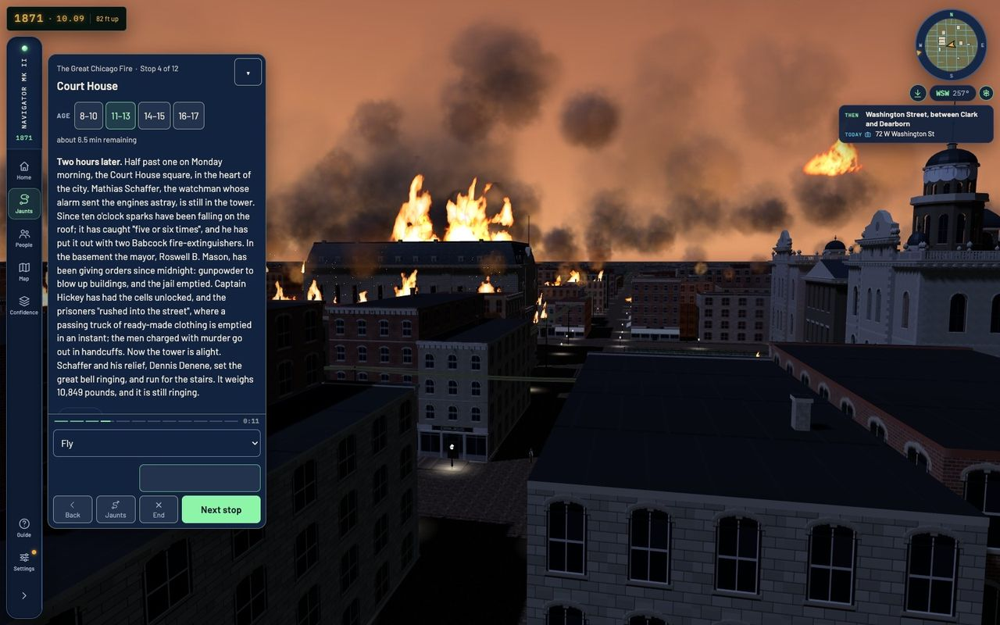
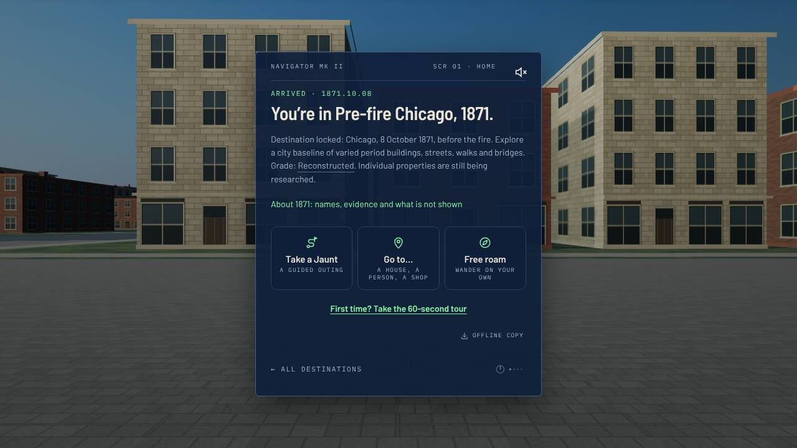
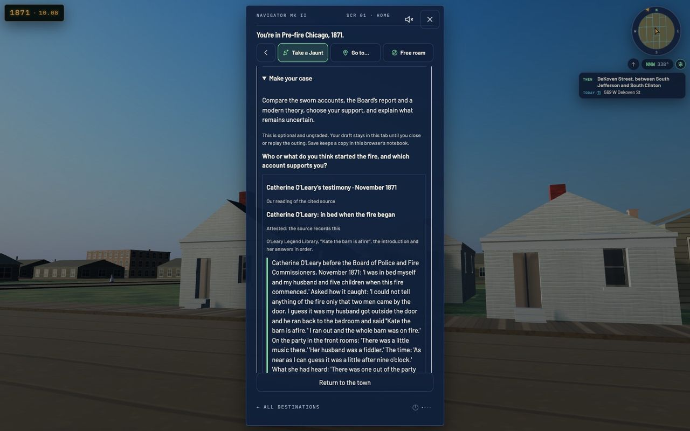
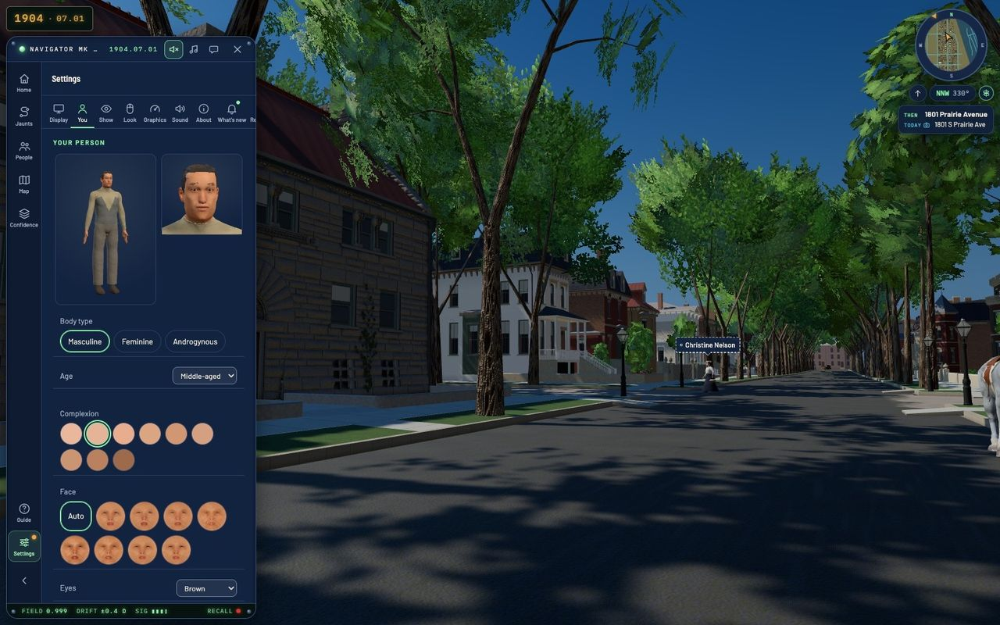
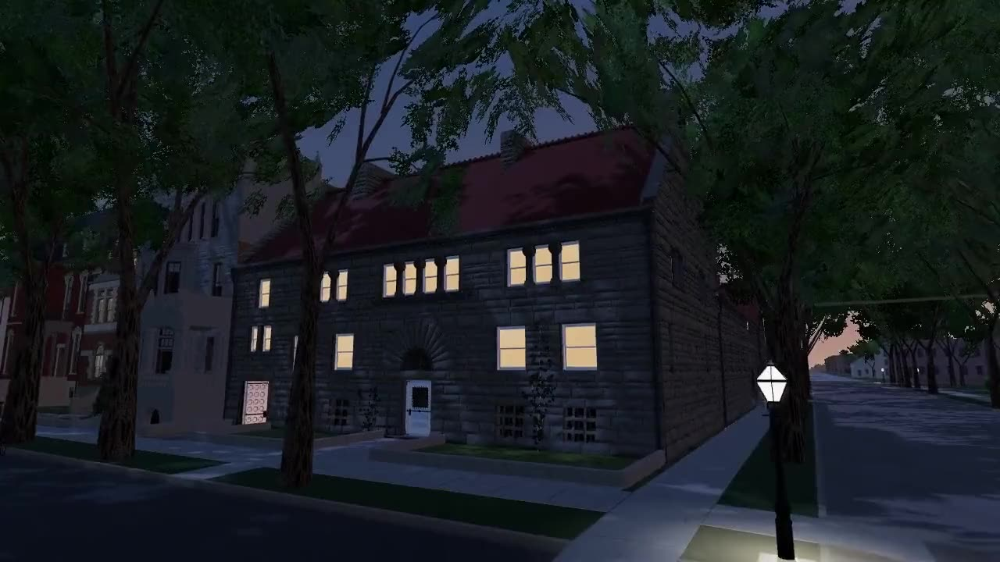

Four years to play in.
Walk, ride, row and fly through Chicago in 1812, 1835, 1871 and 1904. Talk to anyone you meet and follow them home, take a jaunt where your choices change the story, solve a mystery from the evidence, and live through two fires. This page is the field guide: what you can do, and how.
 1812 · flying
1812 · flyingWalk it, fly it, jump in time.
Walk any street and up any stoop, run when you are late, or press F and rise over the rooftops. Jump to another year and you land on the same ground, facing the same way, at the same hour: stand at the forks of the river in 1835, jump to 1871, and you are on the same bank in the wooden city.
- Go toViewpoints, corners, buildings and old photographs, one key away.
- MapThe whole town from above, with every place you have found marked.
- WindowOn a phone at the real Prairie Avenue, the screen becomes a window onto 1904 where you stand.
- VRPut on a headset and walk the street at full size.
On a phone or tablet: the left thumb stick walks, drag to look, tap a person or building to open it.

Everyone in the street has a name.
Every person in town comes from the records or stands in for people the records count but do not name, and their card says which. Names float over their heads; walk up and they stop for you.
- GreetThey turn, touch a hat brim and answer.
- Tell me a storyTheir own story first, then the town’s, in their own words.
- Ask a questionFive questions for everyone, answered in their own manner: a coachman talks horses, a printer talks news.
- KnockAsk at a door for someone by name. If they are home, they come out.
- Find & followSearch anyone in the People directory, find them, and walk with them through their day.
- MetEveryone you have talked to is marked Met and kept in your notebook, year by year.
 Jaunt · 15 Aug 1812
Jaunt · 15 Aug 1812Stories that play out where they happened.
A jaunt takes you from place to place through a story, flying you to each stop. The people who were there play their parts around you, a narrator reads each stop aloud, and music runs underneath.
- Story jauntsThe garrison leaves Fort Dearborn; a scandal at 1612 Prairie; the Pullman twins; the walk to the lake.
- Play a partBe a runner at the fort, the Democrat's new apprentice, the iceman's helper. Your choices change what happens.
- Make your caseWeigh two newspapers, two officers' distances, or who really started the fire, and say how sure you are.
- Where and when?An old photograph: walk to where it was taken from and guess.
- Photo huntStamp a photo of what you find, and share the view.
- Three questionsAt the end, your guide asks where you heard something, who told you, and how sure we can be.


Watch the fort burn. Then the city.
On 16 August 1812 the empty Fort Dearborn went up in flames; you can carry a brand in yourself. On 8 October 1871 the fire started in the O'Leary barn and burned through the night across the river to the North Side. Its jaunt follows it stop by stop, at the hour each place caught.
 16 Aug 1812
16 Aug 1812
9 Oct 1871 · 01:30
 1904 · Prairie Ave
1904 · Prairie AveClimb aboard. Take the reins.
Every carriage and wagon in town can be boarded: you climb up, take the seat, and drive the team. Saddle horses can be ridden in 1812, 1835 and 1904. On the water, the 1812 river has dugouts, bark canoes and skiffs, and the 1835 harbour has schooners you can take the helm of.
- DriveA brougham on Prairie Avenue, a freight wagon on Lake Street, an army wagon at the fort.
- RideAstride, or sidesaddle in a riding habit in 1835 and 1904. Horses walk, trot, canter and gallop.
- Be drivenSit inside the Glessner brougham beside Mr. Glessner and ride home to the coach house.
- Row and sailPaddle across the 1812 river; take the helm of an 1835 schooner round the harbour.

Choose who you are.
In Settings, under You, pick your own person: body, face, hair and clothes of the year you are in. You see your own hands on the reins, the oars and the torch, and your own figure climbing onto a carriage.

1904 · duskSet the clock. Change the weather.
Every year runs from daybreak to night, in spring, summer, autumn or winter. Lamps and candles light the windows after dark. Robins and crickets, wind in the trees and horses on the road change with the season and the hour, and each year has its own music.
- SeasonsEvery tree, crop and garden follows the season you pick.
- Time of dayDaybreak, morning, afternoon, sunset, dusk and night.
- TodayOpen the Today window to see the same spot in Street View now.
On the computer you already have.
No install. It runs in a current web browser on a laptop or desktop, a school Chromebook, an iPhone, an Android phone or an iPad, and in a VR headset's browser. Older and built-in-graphics computers get a lighter picture with every person, horse and carriage still there.
On the way Play from any computer at full detail, streamed from a cloud graphics machine, and a saved game that follows you between devices.
Pick a year. Play.
4D Chicago runs in your browser: no install, on a computer, a phone or a VR headset. Sign in once and every year is open.
Opens the Temporal Observatory · pick a destination · W A S D to walk, or the thumb stick on a phone